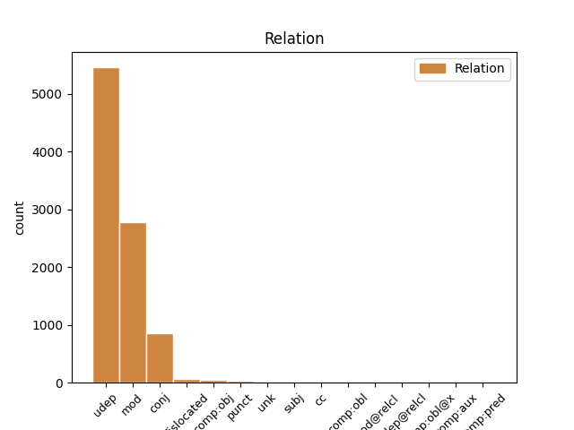
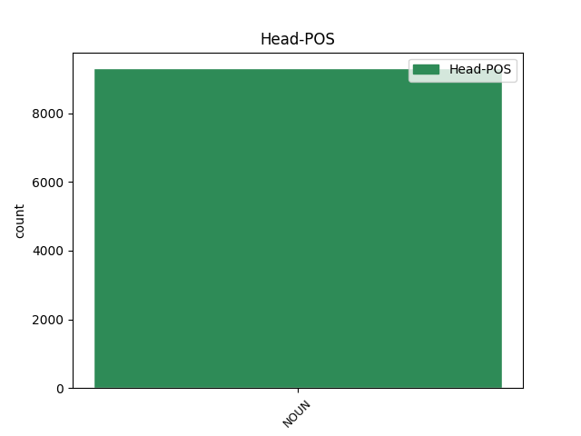
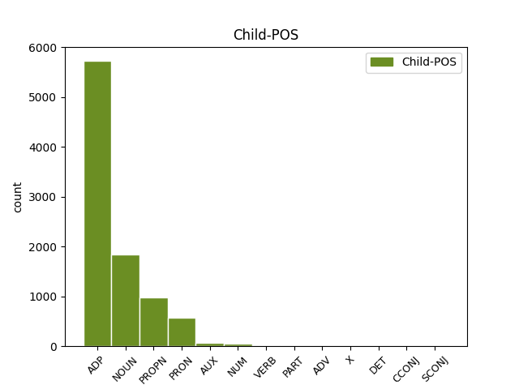

Distribution of features within this leaf



Agreement Rules sorted by frequency.
- When the dependent token is the underspecified dependency(udep) of the head token, and the head token is NOUN and the dependent token is ADP.
1 ایڈمرل _ _ _ _ 0 _ _ _
2 مولن _ _ _ _ 0 _ _ _
3 نے _ _ _ _ 0 _ _ _
4 امریکہ _ _ _ _ 0 _ _ _
5 کی _ _ _ _ 0 _ _ _
6 جانب _ _ _ _ 0 _ _ _
7 سے _ _ _ _ 0 _ _ _
8 اعتماد _ _ _ _ 0 _ _ _
9 کے کا ADP PSP AdpType=Post|Case=Acc|Gender=Masc|Number=Sing 10 udep _ ChunkId=NP3|ChunkType=child
10 فقدان فقدان NOUN NN Case=Acc|Gender=Masc|Number=Sing|Person=3 0 _ _ _
11 پر _ _ _ _ 0 _ _ _
12 بات _ _ _ _ 0 _ _ _
13 کرتے _ _ _ _ 0 _ _ _
14 ہوئے _ _ _ _ 0 _ _ _
15 کہا _ _ _ _ 0 _ _ _
16 کہ _ _ _ _ 0 _ _ _
17 آئی _ _ _ _ 0 _ _ _
18 ایس _ _ _ _ 0 _ _ _
19 آئی _ _ _ _ 0 _ _ _
20 کے _ _ _ _ 0 _ _ _
21 بعض _ _ _ _ 0 _ _ _
22 عناصر _ _ _ _ 0 _ _ _
23 حقانی _ _ _ _ 0 _ _ _
24 نیٹورک _ _ _ _ 0 _ _ _
25 کی _ _ _ _ 0 _ _ _
26 مدد _ _ _ _ 0 _ _ _
27 کر _ _ _ _ 0 _ _ _
28 رہے _ _ _ _ 0 _ _ _
29 ہےں _ _ _ _ 0 _ _ _
30 ۔ _ _ _ _ 0 _ _ _
1 ارکان ارکان NOUN NNZ Case=Nom|Gender=Masc|Number=Sing|Person=3 5 mod _ ChunkId=NP|ChunkType=head|Tam=0|Vib=0
2 اسمبلی _ _ _ _ 0 _ _ _
3 کے _ _ _ _ 0 _ _ _
4 خلاف _ _ _ _ 0 _ _ _
5 مرحلہ_واری مرحلہ NOUN NN Case=Nom|Gender=Masc|Number=Sing|Person=3 0 _ _ _
6 کے _ _ _ _ 0 _ _ _
7 بجائے _ _ _ _ 0 _ _ _
8 تمام _ _ _ _ 0 _ _ _
9 ارکان _ _ _ _ 0 _ _ _
10 اسمبلی _ _ _ _ 0 _ _ _
11 کے _ _ _ _ 0 _ _ _
12 خلاف _ _ _ _ 0 _ _ _
13 کارروائی _ _ _ _ 0 _ _ _
14 کرنے _ _ _ _ 0 _ _ _
15 کا _ _ _ _ 0 _ _ _
16 انہوں _ _ _ _ 0 _ _ _
17 نے _ _ _ _ 0 _ _ _
18 چیلنج _ _ _ _ 0 _ _ _
19 کیا _ _ _ _ 0 _ _ _
20 ۔ _ _ _ _ 0 _ _ _
1 امریکی _ _ _ _ 0 _ _ _
2 مسلح _ _ _ _ 0 _ _ _
3 افواج _ _ _ _ 0 _ _ _
4 کے _ _ _ _ 0 _ _ _
5 سربراہ _ _ _ _ 0 _ _ _
6 چیرمین _ _ _ _ 0 _ _ _
7 جوائنٹ _ _ _ _ 0 _ _ _
8 چیفس _ _ _ _ 0 _ _ _
9 آف _ _ _ _ 0 _ _ _
10 اسٹاف _ _ _ _ 0 _ _ _
11 ایڈمرل _ _ _ _ 0 _ _ _
12 مائیک _ _ _ _ 0 _ _ _
13 مولن _ _ _ _ 0 _ _ _
14 نے _ _ _ _ 0 _ _ _
15 جنگ _ _ _ _ 0 _ _ _
16 کو _ _ _ _ 0 _ _ _
17 انٹرویو _ _ _ _ 0 _ _ _
18 دیتے _ _ _ _ 0 _ _ _
19 ہوئے _ _ _ _ 0 _ _ _
20 اس _ _ _ _ 0 _ _ _
21 بات _ _ _ _ 0 _ _ _
22 کا _ _ _ _ 0 _ _ _
23 اعتراف _ _ _ _ 0 _ _ _
24 کیا _ _ _ _ 0 _ _ _
25 ہے _ _ _ _ 0 _ _ _
26 کہ _ _ _ _ 0 _ _ _
27 پاک _ _ _ _ 0 _ _ _
28 امریکہ امریکہ PROPN NNP Case=Nom|Gender=Masc|Number=Sing|Person=3 29 mod _ ChunkId=NP8|ChunkType=child|Tam=0|Vib=0
29 تعلقات تعلق NOUN NN Case=Nom|Gender=Masc|Number=Plur|Person=3 0 _ _ _
30 گزشتہ _ _ _ _ 0 _ _ _
31 کئی _ _ _ _ 0 _ _ _
32 ماہ _ _ _ _ 0 _ _ _
33 سے _ _ _ _ 0 _ _ _
34 مشکلات _ _ _ _ 0 _ _ _
35 کا _ _ _ _ 0 _ _ _
36 شکار _ _ _ _ 0 _ _ _
37 ہےں _ _ _ _ 0 _ _ _
38 اور _ _ _ _ 0 _ _ _
39 دونوں _ _ _ _ 0 _ _ _
40 ملکوں _ _ _ _ 0 _ _ _
41 کے _ _ _ _ 0 _ _ _
42 درمیان _ _ _ _ 0 _ _ _
43 اعتماد _ _ _ _ 0 _ _ _
44 کا _ _ _ _ 0 _ _ _
45 فقدان _ _ _ _ 0 _ _ _
46 ہے _ _ _ _ 0 _ _ _
47 ۔ _ _ _ _ 0 _ _ _
1 انہوں _ _ _ _ 0 _ _ _
2 نے _ _ _ _ 0 _ _ _
3 کہا _ _ _ _ 0 _ _ _
4 کہ _ _ _ _ 0 _ _ _
5 وزیر _ _ _ _ 0 _ _ _
6 اعظم _ _ _ _ 0 _ _ _
7 نے _ _ _ _ 0 _ _ _
8 کل _ _ _ _ 0 _ _ _
9 منعقدہ _ _ _ _ 0 _ _ _
10 جلسہ _ _ _ _ 0 _ _ _
11 مےں _ _ _ _ 0 _ _ _
12 قیمتوں _ _ _ _ 0 _ _ _
13 مےں _ _ _ _ 0 _ _ _
14 اضافہ اضافہ NOUN NN Case=Acc|Gender=Masc|Number=Sing|Person=3 0 _ _ _
15 , _ _ _ _ 0 _ _ _
16 کرپشن کرپشن NOUN NN Case=Acc|Gender=Masc|Number=Sing|Person=3 14 conj _ ChunkId=NP7|ChunkType=head|Tam=0|Vib=0
17 یا _ _ _ _ 0 _ _ _
18 ماؤیسٹوں _ _ _ _ 0 _ _ _
19 کے _ _ _ _ 0 _ _ _
20 خطرہ _ _ _ _ 0 _ _ _
21 جیسے _ _ _ _ 0 _ _ _
22 مسائل _ _ _ _ 0 _ _ _
23 کا _ _ _ _ 0 _ _ _
24 کوئی _ _ _ _ 0 _ _ _
25 تذکرہ _ _ _ _ 0 _ _ _
26 نہیں _ _ _ _ 0 _ _ _
27 کیا _ _ _ _ 0 _ _ _
28 ۔ _ _ _ _ 0 _ _ _
1 مسز _ _ _ _ 0 _ _ _
2 کونڈا _ _ _ _ 0 _ _ _
3 سریکھا _ _ _ _ 0 _ _ _
4 نے _ _ _ _ 0 _ _ _
5 کہا _ _ _ _ 0 _ _ _
6 کہ _ _ _ _ 0 _ _ _
7 ضمنی _ _ _ _ 0 _ _ _
8 انتخابات _ _ _ _ 0 _ _ _
9 کے _ _ _ _ 0 _ _ _
10 بعد _ _ _ _ 0 _ _ _
11 جگن _ _ _ _ 0 _ _ _
12 موہن _ _ _ _ 0 _ _ _
13 ریڈی _ _ _ _ 0 _ _ _
14 تلنگانہ _ _ _ _ 0 _ _ _
15 پر _ _ _ _ 0 _ _ _
16 اپنے میں PRON PRP Case=Acc|PronType=Prs 17 mod _ ChunkId=NP5|ChunkType=head|Tam=0|Vib=0
17 موقف موقف NOUN NN Case=Acc|Gender=Masc|Number=Sing|Person=3 0 _ _ _
18 کا _ _ _ _ 0 _ _ _
19 اظہار _ _ _ _ 0 _ _ _
20 کریں _ _ _ _ 0 _ _ _
21 گے _ _ _ _ 0 _ _ _
22 اور _ _ _ _ 0 _ _ _
23 ریاست _ _ _ _ 0 _ _ _
24 مےں _ _ _ _ 0 _ _ _
25 کانگریس _ _ _ _ 0 _ _ _
26 حکومت _ _ _ _ 0 _ _ _
27 زوال _ _ _ _ 0 _ _ _
28 سے _ _ _ _ 0 _ _ _
29 دوچار _ _ _ _ 0 _ _ _
30 ہو _ _ _ _ 0 _ _ _
31 جائے _ _ _ _ 0 _ _ _
32 گی _ _ _ _ 0 _ _ _
33 ۔ _ _ _ _ 0 _ _ _
1 آج _ _ _ _ 0 _ _ _
2 اسمبلی _ _ _ _ 0 _ _ _
3 کے _ _ _ _ 0 _ _ _
4 میڈیا _ _ _ _ 0 _ _ _
5 پوائنٹ _ _ _ _ 0 _ _ _
6 پر _ _ _ _ 0 _ _ _
7 صحافیوں _ _ _ _ 0 _ _ _
8 سے _ _ _ _ 0 _ _ _
9 بات_چیت _ _ _ _ 0 _ _ _
10 کرتے _ _ _ _ 0 _ _ _
11 ہوئے _ _ _ _ 0 _ _ _
12 مسز _ _ _ _ 0 _ _ _
13 کونڈا _ _ _ _ 0 _ _ _
14 سریکھا _ _ _ _ 0 _ _ _
15 نے _ _ _ _ 0 _ _ _
16 کہا _ _ _ _ 0 _ _ _
17 کہ _ _ _ _ 0 _ _ _
18 جگن _ _ _ _ 0 _ _ _
19 کی _ _ _ _ 0 _ _ _
20 تائید _ _ _ _ 0 _ _ _
21 کرنے _ _ _ _ 0 _ _ _
22 والے والا ADP PSP AdpType=Post|Case=Nom|Gender=Masc|Number=Plur 23 mod _ ChunkId=VGNN|ChunkType=child
23 ارکان ارکان NOUN NNZ Case=Nom|Gender=Masc|Number=Sing|Person=3 0 _ _ _
24 اسمبلی _ _ _ _ 0 _ _ _
25 کے _ _ _ _ 0 _ _ _
26 خلاف _ _ _ _ 0 _ _ _
27 کارروائی _ _ _ _ 0 _ _ _
28 کرنے _ _ _ _ 0 _ _ _
29 کا _ _ _ _ 0 _ _ _
30 کانگریس _ _ _ _ 0 _ _ _
31 پارٹی _ _ _ _ 0 _ _ _
32 کو _ _ _ _ 0 _ _ _
33 کوئی _ _ _ _ 0 _ _ _
34 حق _ _ _ _ 0 _ _ _
35 نہیں _ _ _ _ 0 _ _ _
36 ہے _ _ _ _ 0 _ _ _
37 کیوںکہ _ _ _ _ 0 _ _ _
38 کانگریس _ _ _ _ 0 _ _ _
39 کو _ _ _ _ 0 _ _ _
40 تنقید _ _ _ _ 0 _ _ _
41 کا _ _ _ _ 0 _ _ _
42 نشانہ _ _ _ _ 0 _ _ _
43 بنانے _ _ _ _ 0 _ _ _
44 والے _ _ _ _ 0 _ _ _
45 چرنجیوی _ _ _ _ 0 _ _ _
46 کو _ _ _ _ 0 _ _ _
47 کانگریس _ _ _ _ 0 _ _ _
48 گلے _ _ _ _ 0 _ _ _
49 لگا _ _ _ _ 0 _ _ _
50 رہی _ _ _ _ 0 _ _ _
51 ہے _ _ _ _ 0 _ _ _
52 ۔ _ _ _ _ 0 _ _ _
1 انھوں _ _ _ _ 0 _ _ _
2 نے _ _ _ _ 0 _ _ _
3 کہا _ _ _ _ 0 _ _ _
4 کہ _ _ _ _ 0 _ _ _
5 وقف _ _ _ _ 0 _ _ _
6 کی _ _ _ _ 0 _ _ _
7 چار چار NUM QC Case=Acc|NumType=Card 8 mod _ ChunkId=NP3|ChunkType=child
8 گز گز NOUN NN Case=Acc|Gender=Masc|Number=Sing|Person=3 0 _ _ _
9 کی _ _ _ _ 0 _ _ _
10 زمین _ _ _ _ 0 _ _ _
11 سے _ _ _ _ 0 _ _ _
12 لے _ _ _ _ 0 _ _ _
13 کر _ _ _ _ 0 _ _ _
14 لینکو _ _ _ _ 0 _ _ _
15 ہلز _ _ _ _ 0 _ _ _
16 کی _ _ _ _ 0 _ _ _
17 ہو _ _ _ _ 0 _ _ _
18 یا _ _ _ _ 0 _ _ _
19 اوقاف _ _ _ _ 0 _ _ _
20 کی _ _ _ _ 0 _ _ _
21 کروڑہا _ _ _ _ 0 _ _ _
22 روپئے _ _ _ _ 0 _ _ _
23 کی _ _ _ _ 0 _ _ _
24 اراضیات _ _ _ _ 0 _ _ _
25 سبھی _ _ _ _ 0 _ _ _
26 کو _ _ _ _ 0 _ _ _
27 قبضہ _ _ _ _ 0 _ _ _
28 مےں _ _ _ _ 0 _ _ _
29 لینے _ _ _ _ 0 _ _ _
30 کی _ _ _ _ 0 _ _ _
31 کوشش _ _ _ _ 0 _ _ _
32 کی _ _ _ _ 0 _ _ _
33 جا _ _ _ _ 0 _ _ _
34 رہی _ _ _ _ 0 _ _ _
35 ہے _ _ _ _ 0 _ _ _
36 ۔ _ _ _ _ 0 _ _ _
1 اردو _ _ _ _ 0 _ _ _
2 مترجم مترجم NOUN NN Case=Acc|Gender=Masc|Number=Sing|Person=3 0 _ _ _
3 اور _ _ _ _ 0 _ _ _
4 اقلیتی _ _ _ _ 0 _ _ _
5 اسپیشل _ _ _ _ 0 _ _ _
6 آفیسر آفیسر PROPN NNP Case=Acc|Gender=Masc|Number=Sing|Person=3 2 conj _ ChunkId=NP2|ChunkType=head|Tam=0|Vib=0
7 کا _ _ _ _ 0 _ _ _
8 تقرر _ _ _ _ 0 _ _ _
9 بھی _ _ _ _ 0 _ _ _
10 کیا _ _ _ _ 0 _ _ _
11 جائےگا _ _ _ _ 0 _ _ _
12 ۔ _ _ _ _ 0 _ _ _
1 اس _ _ _ _ 0 _ _ _
2 قانون _ _ _ _ 0 _ _ _
3 کے _ _ _ _ 0 _ _ _
4 تحت _ _ _ _ 0 _ _ _
5 پاکستان _ _ _ _ 0 _ _ _
6 کو _ _ _ _ 0 _ _ _
7 دی _ _ _ _ 0 _ _ _
8 جانے جا AUX VAUX Case=Acc|VerbForm=Inf 12 mod _ ChunkId=VGNN|ChunkType=child|Tam=nA|Vib=نا
9 والی _ _ _ _ 0 _ _ _
10 ڈیڑھ _ _ _ _ 0 _ _ _
11 بلین _ _ _ _ 0 _ _ _
12 ڈالرس ڈالرس NOUN NN Case=Acc|Gender=Masc|Number=Sing|Person=3 0 _ _ _
13 کی _ _ _ _ 0 _ _ _
14 غیرفوجی _ _ _ _ 0 _ _ _
15 امداد _ _ _ _ 0 _ _ _
16 کو _ _ _ _ 0 _ _ _
17 تین _ _ _ _ 0 _ _ _
18 گنا _ _ _ _ 0 _ _ _
19 کر _ _ _ _ 0 _ _ _
20 دیا _ _ _ _ 0 _ _ _
21 گیا _ _ _ _ 0 _ _ _
22 ہے _ _ _ _ 0 _ _ _
23 ، _ _ _ _ 0 _ _ _
24 خاص _ _ _ _ 0 _ _ _
25 طور _ _ _ _ 0 _ _ _
26 پر _ _ _ _ 0 _ _ _
27 جمہوری _ _ _ _ 0 _ _ _
28 اداروں _ _ _ _ 0 _ _ _
29 کو _ _ _ _ 0 _ _ _
30 مستحکم _ _ _ _ 0 _ _ _
31 کرنے _ _ _ _ 0 _ _ _
32 پر _ _ _ _ 0 _ _ _
33 توجہ _ _ _ _ 0 _ _ _
34 دی _ _ _ _ 0 _ _ _
35 جائے _ _ _ _ 0 _ _ _
36 گی _ _ _ _ 0 _ _ _
37 اور _ _ _ _ 0 _ _ _
38 معاشی _ _ _ _ 0 _ _ _
39 ترقی _ _ _ _ 0 _ _ _
40 کو _ _ _ _ 0 _ _ _
41 فروغ _ _ _ _ 0 _ _ _
42 دینے _ _ _ _ 0 _ _ _
43 کی _ _ _ _ 0 _ _ _
44 تجویز _ _ _ _ 0 _ _ _
45 پیش _ _ _ _ 0 _ _ _
46 کی _ _ _ _ 0 _ _ _
47 گئی _ _ _ _ 0 _ _ _
48 ہے _ _ _ _ 0 _ _ _
49 ۔ _ _ _ _ 0 _ _ _
1 کریم _ _ _ _ 0 _ _ _
2 نگر _ _ _ _ 0 _ _ _
3 مےں _ _ _ _ 0 _ _ _
4 قبرستان _ _ _ _ 0 _ _ _
5 اور _ _ _ _ 0 _ _ _
6 عیدگاہ _ _ _ _ 0 _ _ _
7 کے _ _ _ _ 0 _ _ _
8 لیے _ _ _ _ 0 _ _ _
9 قبل _ _ _ _ 0 _ _ _
10 ازیں _ _ _ _ 0 _ _ _
11 وائی _ _ _ _ 0 _ _ _
12 ایس _ _ _ _ 0 _ _ _
13 راج _ _ _ _ 0 _ _ _
14 شیکھر _ _ _ _ 0 _ _ _
15 ریڈی _ _ _ _ 0 _ _ _
16 کے _ _ _ _ 0 _ _ _
17 اعلان _ _ _ _ 0 _ _ _
18 کے _ _ _ _ 0 _ _ _
19 مطابق _ _ _ _ 0 _ _ _
20 25 _ _ _ _ 0 _ _ _
21 اور _ _ _ _ 0 _ _ _
22 20 _ _ _ _ 0 _ _ _
23 ایکر _ _ _ _ 0 _ _ _
24 اراضی _ _ _ _ 0 _ _ _
25 مختص _ _ _ _ 0 _ _ _
26 کرنے _ _ _ _ 0 _ _ _
27 , _ _ _ _ 0 _ _ _
28 نامزد _ _ _ _ 0 _ _ _
29 عہدوں _ _ _ _ 0 _ _ _
30 پر _ _ _ _ 0 _ _ _
31 20 _ _ _ _ 0 _ _ _
32 فیصد _ _ _ _ 0 _ _ _
33 یا _ _ _ _ 0 _ _ _
34 پھر _ _ _ _ 0 _ _ _
35 آبادی _ _ _ _ 0 _ _ _
36 کے _ _ _ _ 0 _ _ _
37 لحاظ _ _ _ _ 0 _ _ _
38 سے _ _ _ _ 0 _ _ _
39 تقررات _ _ _ _ 0 _ _ _
40 , _ _ _ _ 0 _ _ _
41 وقف _ _ _ _ 0 _ _ _
42 کی _ _ _ _ 0 _ _ _
43 جائیدادوں _ _ _ _ 0 _ _ _
44 , _ _ _ _ 0 _ _ _
45 ناجائز _ _ _ _ 0 _ _ _
46 قبضوں _ _ _ _ 0 _ _ _
47 کی _ _ _ _ 0 _ _ _
48 برخاستگی _ _ _ _ 0 _ _ _
49 اور _ _ _ _ 0 _ _ _
50 منشائے _ _ _ _ 0 _ _ _
51 وقف _ _ _ _ 0 _ _ _
52 کے _ _ _ _ 0 _ _ _
53 مطابق _ _ _ _ 0 _ _ _
54 عمل_آوری _ _ _ _ 0 _ _ _
55 , _ _ _ _ 0 _ _ _
56 کریم _ _ _ _ 0 _ _ _
57 نگر _ _ _ _ 0 _ _ _
58 مےں _ _ _ _ 0 _ _ _
59 اردو _ _ _ _ 0 _ _ _
60 سرکاری _ _ _ _ 0 _ _ _
61 زبان _ _ _ _ 0 _ _ _
62 پر _ _ _ _ 0 _ _ _
63 مؤثر _ _ _ _ 0 _ _ _
64 عمل_آوری _ _ _ _ 0 _ _ _
65 , _ _ _ _ 0 _ _ _
66 کم _ _ _ _ 0 _ _ _
67 از _ _ _ _ 0 _ _ _
68 کم _ _ _ _ 0 _ _ _
69 دو _ _ _ _ 0 _ _ _
70 مترجمین _ _ _ _ 0 _ _ _
71 کی _ _ _ _ 0 _ _ _
72 تقرری تقرری NOUN NN Case=Nom|Gender=Fem|Number=Sing|Person=3 0 _ _ _
73 اور _ _ _ _ 0 _ _ _
74 علیحدہ _ _ _ _ 0 _ _ _
75 اقلیتی _ _ _ _ 0 _ _ _
76 اُمور _ _ _ _ 0 _ _ _
77 کے _ _ _ _ 0 _ _ _
78 لیے _ _ _ _ 0 _ _ _
79 اےک _ _ _ _ 0 _ _ _
80 اسپیشل _ _ _ _ 0 _ _ _
81 آفیسر _ _ _ _ 0 _ _ _
82 کی _ _ _ _ 0 _ _ _
83 تقرری _ _ _ _ 0 _ _ _
84 کا کا ADP PSP AdpType=Post|Case=Nom|Gender=Masc|Number=Sing 72 conj _ ChunkId=NP27|ChunkType=child
85 مطالبہ _ _ _ _ 0 _ _ _
86 کیا _ _ _ _ 0 _ _ _
87 گیا _ _ _ _ 0 _ _ _
88 ۔ _ _ _ _ 0 _ _ _
1 مسز _ _ _ _ 0 _ _ _
2 کونڈا _ _ _ _ 0 _ _ _
3 سریکھا _ _ _ _ 0 _ _ _
4 کے _ _ _ _ 0 _ _ _
5 بشمول _ _ _ _ 0 _ _ _
6 جگن _ _ _ _ 0 _ _ _
7 کی _ _ _ _ 0 _ _ _
8 تائید _ _ _ _ 0 _ _ _
9 کرنے _ _ _ _ 0 _ _ _
10 والے _ _ _ _ 0 _ _ _
11 مزید _ _ _ _ 0 _ _ _
12 5 _ _ _ _ 0 _ _ _
13 ارکان ارکان NOUN NN Case=Nom|Gender=Masc|Number=Plur|Person=3 0 _ _ _
14 اسمبلی _ _ _ _ 0 _ _ _
15 کی کا ADP PSP AdpType=Post|Case=Nom|Gender=Fem|Number=Sing 13 dislocated _ ChunkId=FRAGP|ChunkType=head
16 رکنیت _ _ _ _ 0 _ _ _
17 منسوخ _ _ _ _ 0 _ _ _
18 کرنے _ _ _ _ 0 _ _ _
19 کے _ _ _ _ 0 _ _ _
20 سوال _ _ _ _ 0 _ _ _
21 کا _ _ _ _ 0 _ _ _
22 جواب _ _ _ _ 0 _ _ _
23 دیتے _ _ _ _ 0 _ _ _
24 ہوئے _ _ _ _ 0 _ _ _
25 کہا _ _ _ _ 0 _ _ _
26 کہ _ _ _ _ 0 _ _ _
27 ہم _ _ _ _ 0 _ _ _
28 کارروائی _ _ _ _ 0 _ _ _
29 سے _ _ _ _ 0 _ _ _
30 ڈرنے _ _ _ _ 0 _ _ _
31 گھبرانے _ _ _ _ 0 _ _ _
32 والے _ _ _ _ 0 _ _ _
33 نہیں _ _ _ _ 0 _ _ _
34 ہےں _ _ _ _ 0 _ _ _
35 ۔ _ _ _ _ 0 _ _ _
1 اس _ _ _ _ 0 _ _ _
2 موقع _ _ _ _ 0 _ _ _
3 پر _ _ _ _ 0 _ _ _
4 ضلع _ _ _ _ 0 _ _ _
5 انچارج _ _ _ _ 0 _ _ _
6 مسٹر _ _ _ _ 0 _ _ _
7 کومٹ _ _ _ _ 0 _ _ _
8 ریڈی _ _ _ _ 0 _ _ _
9 وینکٹ _ _ _ _ 0 _ _ _
10 ریڈی _ _ _ _ 0 _ _ _
11 نے _ _ _ _ 0 _ _ _
12 ضلع ضلع NOUN NNC Case=Nom|Gender=Masc|Number=Sing|Person=3 0 _ _ _
13 کلکٹر کلکٹر NOUN NNC Case=Nom|Gender=Masc|Number=Sing|Person=3 12 comp:obj _ ChunkId=NP3|ChunkType=head|Tam=0|Vib=0
14 ڈاکٹر _ _ _ _ 0 _ _ _
15 اشوک _ _ _ _ 0 _ _ _
16 کو _ _ _ _ 0 _ _ _
17 ہدایت _ _ _ _ 0 _ _ _
18 دی _ _ _ _ 0 _ _ _
19 کہ _ _ _ _ 0 _ _ _
20 وہ _ _ _ _ 0 _ _ _
21 پینے _ _ _ _ 0 _ _ _
22 کا _ _ _ _ 0 _ _ _
23 پانی _ _ _ _ 0 _ _ _
24 فراہم _ _ _ _ 0 _ _ _
25 کرنے _ _ _ _ 0 _ _ _
26 کی _ _ _ _ 0 _ _ _
27 غرض _ _ _ _ 0 _ _ _
28 سے _ _ _ _ 0 _ _ _
29 اونچی _ _ _ _ 0 _ _ _
30 سطح _ _ _ _ 0 _ _ _
31 پر _ _ _ _ 0 _ _ _
32 پانی _ _ _ _ 0 _ _ _
33 ٹینک _ _ _ _ 0 _ _ _
34 تعمیر _ _ _ _ 0 _ _ _
35 کراتے _ _ _ _ 0 _ _ _
36 ہوئے _ _ _ _ 0 _ _ _
37 پینے _ _ _ _ 0 _ _ _
38 کا _ _ _ _ 0 _ _ _
39 پانی _ _ _ _ 0 _ _ _
40 عوام _ _ _ _ 0 _ _ _
41 کو _ _ _ _ 0 _ _ _
42 فراہم _ _ _ _ 0 _ _ _
43 کریں _ _ _ _ 0 _ _ _
44 ۔ _ _ _ _ 0 _ _ _
1 مسٹر _ _ _ _ 0 _ _ _
2 بھٹاچارجی _ _ _ _ 0 _ _ _
3 نے _ _ _ _ 0 _ _ _
4 یہاں _ _ _ _ 0 _ _ _
5 صحافت _ _ _ _ 0 _ _ _
6 سے _ _ _ _ 0 _ _ _
7 ملاقات _ _ _ _ 0 _ _ _
8 پروگرام _ _ _ _ 0 _ _ _
9 مےں _ _ _ _ 0 _ _ _
10 حصہ _ _ _ _ 0 _ _ _
11 لیتے _ _ _ _ 0 _ _ _
12 ہوئے _ _ _ _ 0 _ _ _
13 کہا _ _ _ _ 0 _ _ _
14 کہ _ _ _ _ 0 _ _ _
15 انہیں _ _ _ _ 0 _ _ _
16 وزیر _ _ _ _ 0 _ _ _
17 اعظم _ _ _ _ 0 _ _ _
18 نے _ _ _ _ 0 _ _ _
19 کل _ _ _ _ 0 _ _ _
20 جو جو PRON PRP Case=Nom|Number=Sing|Person=3|PronType=Prs 21 udep _ ChunkId=NP8|ChunkType=child|Tam=0|Vib=0
21 بیان بیان NOUN NN Case=Nom|Gender=Masc|Number=Sing|Person=3 0 _ _ _
22 دیا _ _ _ _ 0 _ _ _
23 ہے _ _ _ _ 0 _ _ _
24 اس _ _ _ _ 0 _ _ _
25 پر _ _ _ _ 0 _ _ _
26 حیرت _ _ _ _ 0 _ _ _
27 ہوئی _ _ _ _ 0 _ _ _
28 ہے _ _ _ _ 0 _ _ _
29 ۔ _ _ _ _ 0 _ _ _
1 ایسے ایسا PRON PRP Case=Acc|Gender=Masc|Number=Sing|PronType=Prs 3 punct _ ChunkId=NP|ChunkType=child
2 کتنے _ _ _ _ 0 _ _ _
3 افراد فرد NOUN NN Case=Acc|Gender=Masc|Number=Plur|Person=3 0 _ _ _
4 روزآنہ _ _ _ _ 0 _ _ _
5 رات _ _ _ _ 0 _ _ _
6 دیر _ _ _ _ 0 _ _ _
7 گئے _ _ _ _ 0 _ _ _
8 گھر _ _ _ _ 0 _ _ _
9 لوٹتے _ _ _ _ 0 _ _ _
10 ہوں _ _ _ _ 0 _ _ _
11 گے _ _ _ _ 0 _ _ _
12 ۔ _ _ _ _ 0 _ _ _
1 اُس _ _ _ _ 0 _ _ _
2 کے _ _ _ _ 0 _ _ _
3 علاوہ _ _ _ _ 0 _ _ _
4 بھی _ _ _ _ 0 _ _ _
5 کوئی کوئی PRON PRP Case=Nom|Number=Sing|Person=3|PronType=Prs 7 unk _ ChunkId=NP2|ChunkType=child|Tam=0|Vib=0
6 معقول _ _ _ _ 0 _ _ _
7 منصوبہ منصوبہ NOUN NN Case=Nom|Gender=Masc|Number=Sing|Person=3 0 _ _ _
8 پیش _ _ _ _ 0 _ _ _
9 کئے _ _ _ _ 0 _ _ _
10 جانے _ _ _ _ 0 _ _ _
11 پر _ _ _ _ 0 _ _ _
12 اُس _ _ _ _ 0 _ _ _
13 کے _ _ _ _ 0 _ _ _
14 لیے _ _ _ _ 0 _ _ _
15 فنڈس _ _ _ _ 0 _ _ _
16 کی _ _ _ _ 0 _ _ _
17 منظوری _ _ _ _ 0 _ _ _
18 دی _ _ _ _ 0 _ _ _
19 جائےگی _ _ _ _ 0 _ _ _
20 چونکہ _ _ _ _ 0 _ _ _
21 کروڑہا _ _ _ _ 0 _ _ _
22 روپئے _ _ _ _ 0 _ _ _
23 موجود _ _ _ _ 0 _ _ _
24 ہیں _ _ _ _ 0 _ _ _
25 ۔ _ _ _ _ 0 _ _ _
1 پاکستان _ _ _ _ 0 _ _ _
2 کرکٹ _ _ _ _ 0 _ _ _
3 بورڈ _ _ _ _ 0 _ _ _
4 کے _ _ _ _ 0 _ _ _
5 چیرمین _ _ _ _ 0 _ _ _
6 اعجاز _ _ _ _ 0 _ _ _
7 بٹ _ _ _ _ 0 _ _ _
8 کا _ _ _ _ 0 _ _ _
9 کہنا _ _ _ _ 0 _ _ _
10 ہے _ _ _ _ 0 _ _ _
11 کہ _ _ _ _ 0 _ _ _
12 ورلڈ _ _ _ _ 0 _ _ _
13 کپ _ _ _ _ 0 _ _ _
14 2011 _ _ _ _ 0 _ _ _
15 ء _ _ _ _ 0 _ _ _
16 کے _ _ _ _ 0 _ _ _
17 مقابلے _ _ _ _ 0 _ _ _
18 کی _ _ _ _ 0 _ _ _
19 میزبانی _ _ _ _ 0 _ _ _
20 کے _ _ _ _ 0 _ _ _
21 لیے _ _ _ _ 0 _ _ _
22 بڑھتے _ _ _ _ 0 _ _ _
23 ہوئے _ _ _ _ 0 _ _ _
24 تنازعہ _ _ _ _ 0 _ _ _
25 کا _ _ _ _ 0 _ _ _
26 حل _ _ _ _ 0 _ _ _
27 ہمارے ہم PRON PRP Case=Nom|Gender=Masc|Number=Plur|Person=1|PronType=Prs 28 subj _ ChunkId=NP9|ChunkType=child|Tam=ka|Vib=کا
28 پاس پاس NOUN NN Case=Nom|Gender=Masc|Number=Sing|Person=3 0 _ _ _
29 تیسرے _ _ _ _ 0 _ _ _
30 مقام _ _ _ _ 0 _ _ _
31 پر _ _ _ _ 0 _ _ _
32 اس _ _ _ _ 0 _ _ _
33 کے _ _ _ _ 0 _ _ _
34 انعقاد _ _ _ _ 0 _ _ _
35 کی _ _ _ _ 0 _ _ _
36 شکل _ _ _ _ 0 _ _ _
37 میں _ _ _ _ 0 _ _ _
38 موجود _ _ _ _ 0 _ _ _
39 ہے _ _ _ _ 0 _ _ _
40 تاہم _ _ _ _ 0 _ _ _
41 دبئی _ _ _ _ 0 _ _ _
42 میں _ _ _ _ 0 _ _ _
43 منعقد _ _ _ _ 0 _ _ _
44 ہونے _ _ _ _ 0 _ _ _
45 والے _ _ _ _ 0 _ _ _
46 اجلاس _ _ _ _ 0 _ _ _
47 میں _ _ _ _ 0 _ _ _
48 پوری _ _ _ _ 0 _ _ _
49 کوشش _ _ _ _ 0 _ _ _
50 کی _ _ _ _ 0 _ _ _
51 جائے _ _ _ _ 0 _ _ _
52 گی _ _ _ _ 0 _ _ _
53 کہ _ _ _ _ 0 _ _ _
54 مقابلوں _ _ _ _ 0 _ _ _
55 کا _ _ _ _ 0 _ _ _
56 انعقاد _ _ _ _ 0 _ _ _
57 پاکستان _ _ _ _ 0 _ _ _
58 میں _ _ _ _ 0 _ _ _
59 ہی _ _ _ _ 0 _ _ _
60 ہو _ _ _ _ 0 _ _ _
61 - _ _ _ _ 0 _ _ _
1 ( _ _ _ _ 0 _ _ _
2 3 _ _ _ _ 0 _ _ _
3 ) _ _ _ _ 0 _ _ _
4 اللہ اللہ PROPN NNP Case=Nom|Gender=Masc|Number=Sing|Person=3 5 punct _ ChunkId=NP|ChunkType=child|Tam=0|Vib=0
5 تعالیٰ تعالیٰ NOUN NNC Case=Nom|Gender=Masc|Number=Sing|Person=3 0 _ _ _
6 جب _ _ _ _ 0 _ _ _
7 کسی _ _ _ _ 0 _ _ _
8 کو _ _ _ _ 0 _ _ _
9 نوازنا _ _ _ _ 0 _ _ _
10 چاہتا _ _ _ _ 0 _ _ _
11 ہے _ _ _ _ 0 _ _ _
12 تو _ _ _ _ 0 _ _ _
13 اس _ _ _ _ 0 _ _ _
14 کے _ _ _ _ 0 _ _ _
15 لیے _ _ _ _ 0 _ _ _
16 بہتر _ _ _ _ 0 _ _ _
17 سے _ _ _ _ 0 _ _ _
18 بہتر _ _ _ _ 0 _ _ _
19 تدبیریں _ _ _ _ 0 _ _ _
20 عطا _ _ _ _ 0 _ _ _
21 فرماتا _ _ _ _ 0 _ _ _
22 ہے _ _ _ _ 0 _ _ _
23 , _ _ _ _ 0 _ _ _
1 انہوں _ _ _ _ 0 _ _ _
2 نے _ _ _ _ 0 _ _ _
3 اعتراف _ _ _ _ 0 _ _ _
4 کیا _ _ _ _ 0 _ _ _
5 کہ _ _ _ _ 0 _ _ _
6 چین _ _ _ _ 0 _ _ _
7 اور _ _ _ _ 0 _ _ _
8 ہندوستان _ _ _ _ 0 _ _ _
9 نے _ _ _ _ 0 _ _ _
10 حالانکہ _ _ _ _ 0 _ _ _
11 مسائل _ _ _ _ 0 _ _ _
12 کی _ _ _ _ 0 _ _ _
13 یکسوئی _ _ _ _ 0 _ _ _
14 کے _ _ _ _ 0 _ _ _
15 لیے _ _ _ _ 0 _ _ _
16 اس _ _ _ _ 0 _ _ _
17 تیزرفتاری _ _ _ _ 0 _ _ _
18 کا _ _ _ _ 0 _ _ _
19 مظاہرہ _ _ _ _ 0 _ _ _
20 نہیں _ _ _ _ 0 _ _ _
21 کیا _ _ _ _ 0 _ _ _
22 جیساکہ _ _ _ _ 0 _ _ _
23 عوام _ _ _ _ 0 _ _ _
24 کی _ _ _ _ 0 _ _ _
25 توقعات _ _ _ _ 0 _ _ _
26 تھیں _ _ _ _ 0 _ _ _
27 لیکن _ _ _ _ 0 _ _ _
28 اس _ _ _ _ 0 _ _ _
29 کے _ _ _ _ 0 _ _ _
30 باوجود _ _ _ _ 0 _ _ _
31 ہند _ _ _ _ 0 _ _ _
32 ۔ _ _ _ _ 0 _ _ _
33 چین _ _ _ _ 0 _ _ _
34 کی کا ADP PSP AdpType=Post|Case=Nom|Gender=Fem|Number=Sing 37 subj _ ChunkId=NP13|ChunkType=child
35 سرحدوں _ _ _ _ 0 _ _ _
36 جیساکہ _ _ _ _ 0 _ _ _
37 حالات حال NOUN NN Case=Nom|Gender=Masc|Number=Plur|Person=3 0 _ _ _
38 پرسکون _ _ _ _ 0 _ _ _
39 ہیں _ _ _ _ 0 _ _ _
40 ۔ _ _ _ _ 0 _ _ _
1 ہمارا _ _ _ _ 0 _ _ _
2 اصل _ _ _ _ 0 _ _ _
3 دشمن _ _ _ _ 0 _ _ _
4 ہمارا _ _ _ _ 0 _ _ _
5 اپنا _ _ _ _ 0 _ _ _
6 نفس _ _ _ _ 0 _ _ _
7 ہے _ _ _ _ 0 _ _ _
8 , _ _ _ _ 0 _ _ _
9 اسی _ _ _ _ 0 _ _ _
10 لیے _ _ _ _ 0 _ _ _
11 مشائخ مشائخ NOUN NN Case=Nom|Gender=Masc|Number=Plur|Person=3 0 _ _ _
12 کرام کرام PART RP Case=Nom|Gender=Masc|Number=Sing|Person=3 11 unk _ ChunkId=NP7|ChunkType=child|Tam=0|Vib=0
13 نفس _ _ _ _ 0 _ _ _
14 پر _ _ _ _ 0 _ _ _
15 خاص _ _ _ _ 0 _ _ _
16 توجہ _ _ _ _ 0 _ _ _
17 فرمایا _ _ _ _ 0 _ _ _
18 کرتے _ _ _ _ 0 _ _ _
19 تھے _ _ _ _ 0 _ _ _
20 ۔ _ _ _ _ 0 _ _ _
1 کریم _ _ _ _ 0 _ _ _
2 نگر _ _ _ _ 0 _ _ _
3 مےں _ _ _ _ 0 _ _ _
4 قبرستان _ _ _ _ 0 _ _ _
5 اور _ _ _ _ 0 _ _ _
6 عیدگاہ _ _ _ _ 0 _ _ _
7 کے _ _ _ _ 0 _ _ _
8 لیے _ _ _ _ 0 _ _ _
9 قبل _ _ _ _ 0 _ _ _
10 ازیں _ _ _ _ 0 _ _ _
11 وائی _ _ _ _ 0 _ _ _
12 ایس _ _ _ _ 0 _ _ _
13 راج _ _ _ _ 0 _ _ _
14 شیکھر _ _ _ _ 0 _ _ _
15 ریڈی _ _ _ _ 0 _ _ _
16 کے _ _ _ _ 0 _ _ _
17 اعلان _ _ _ _ 0 _ _ _
18 کے _ _ _ _ 0 _ _ _
19 مطابق _ _ _ _ 0 _ _ _
20 25 _ _ _ _ 0 _ _ _
21 اور _ _ _ _ 0 _ _ _
22 20 _ _ _ _ 0 _ _ _
23 ایکر _ _ _ _ 0 _ _ _
24 اراضی _ _ _ _ 0 _ _ _
25 مختص _ _ _ _ 0 _ _ _
26 کرنے کر VERB VM Case=Nom|VerbForm=Inf 85 mod _ ChunkId=VGNN|ChunkType=head|SpaceAfter=No|Tam=nA|Vib=نا
27 , _ _ _ _ 0 _ _ _
28 نامزد _ _ _ _ 0 _ _ _
29 عہدوں _ _ _ _ 0 _ _ _
30 پر _ _ _ _ 0 _ _ _
31 20 _ _ _ _ 0 _ _ _
32 فیصد _ _ _ _ 0 _ _ _
33 یا _ _ _ _ 0 _ _ _
34 پھر _ _ _ _ 0 _ _ _
35 آبادی _ _ _ _ 0 _ _ _
36 کے _ _ _ _ 0 _ _ _
37 لحاظ _ _ _ _ 0 _ _ _
38 سے _ _ _ _ 0 _ _ _
39 تقررات _ _ _ _ 0 _ _ _
40 , _ _ _ _ 0 _ _ _
41 وقف _ _ _ _ 0 _ _ _
42 کی _ _ _ _ 0 _ _ _
43 جائیدادوں _ _ _ _ 0 _ _ _
44 , _ _ _ _ 0 _ _ _
45 ناجائز _ _ _ _ 0 _ _ _
46 قبضوں _ _ _ _ 0 _ _ _
47 کی _ _ _ _ 0 _ _ _
48 برخاستگی _ _ _ _ 0 _ _ _
49 اور _ _ _ _ 0 _ _ _
50 منشائے _ _ _ _ 0 _ _ _
51 وقف _ _ _ _ 0 _ _ _
52 کے _ _ _ _ 0 _ _ _
53 مطابق _ _ _ _ 0 _ _ _
54 عمل_آوری _ _ _ _ 0 _ _ _
55 , _ _ _ _ 0 _ _ _
56 کریم _ _ _ _ 0 _ _ _
57 نگر _ _ _ _ 0 _ _ _
58 مےں _ _ _ _ 0 _ _ _
59 اردو _ _ _ _ 0 _ _ _
60 سرکاری _ _ _ _ 0 _ _ _
61 زبان _ _ _ _ 0 _ _ _
62 پر _ _ _ _ 0 _ _ _
63 مؤثر _ _ _ _ 0 _ _ _
64 عمل_آوری _ _ _ _ 0 _ _ _
65 , _ _ _ _ 0 _ _ _
66 کم _ _ _ _ 0 _ _ _
67 از _ _ _ _ 0 _ _ _
68 کم _ _ _ _ 0 _ _ _
69 دو _ _ _ _ 0 _ _ _
70 مترجمین _ _ _ _ 0 _ _ _
71 کی _ _ _ _ 0 _ _ _
72 تقرری _ _ _ _ 0 _ _ _
73 اور _ _ _ _ 0 _ _ _
74 علیحدہ _ _ _ _ 0 _ _ _
75 اقلیتی _ _ _ _ 0 _ _ _
76 اُمور _ _ _ _ 0 _ _ _
77 کے _ _ _ _ 0 _ _ _
78 لیے _ _ _ _ 0 _ _ _
79 اےک _ _ _ _ 0 _ _ _
80 اسپیشل _ _ _ _ 0 _ _ _
81 آفیسر _ _ _ _ 0 _ _ _
82 کی _ _ _ _ 0 _ _ _
83 تقرری _ _ _ _ 0 _ _ _
84 کا _ _ _ _ 0 _ _ _
85 مطالبہ مطالبہ NOUN NN Case=Nom|Gender=Masc|Number=Sing|Person=3 0 _ _ _
86 کیا _ _ _ _ 0 _ _ _
87 گیا _ _ _ _ 0 _ _ _
88 ۔ _ _ _ _ 0 _ _ _
1 تعلقہ _ _ _ _ 0 _ _ _
2 پرگی _ _ _ _ 0 _ _ _
3 کے _ _ _ _ 0 _ _ _
4 علاقہ _ _ _ _ 0 _ _ _
5 کا _ _ _ _ 0 _ _ _
6 دینی _ _ _ _ 0 _ _ _
7 , _ _ _ _ 0 _ _ _
8 اصلاحی _ _ _ _ 0 _ _ _
9 , _ _ _ _ 0 _ _ _
10 تربیتی _ _ _ _ 0 _ _ _
11 و _ _ _ _ 0 _ _ _
12 اقامتی _ _ _ _ 0 _ _ _
13 ادارہ _ _ _ _ 0 _ _ _
14 عبداللہ _ _ _ _ 0 _ _ _
15 بن _ _ _ _ 0 _ _ _
16 مسعود _ _ _ _ 0 _ _ _
17 کا _ _ _ _ 0 _ _ _
18 جلسہ _ _ _ _ 0 _ _ _
19 تقسیم _ _ _ _ 0 _ _ _
20 اسناد _ _ _ _ 0 _ _ _
21 و _ _ _ _ 0 _ _ _
22 تکمیل _ _ _ _ 0 _ _ _
23 حفظ _ _ _ _ 0 _ _ _
24 قرآن _ _ _ _ 0 _ _ _
25 مجید _ _ _ _ 0 _ _ _
26 کا _ _ _ _ 0 _ _ _
27 انعقاد _ _ _ _ 0 _ _ _
28 23 _ _ _ _ 0 _ _ _
29 اپریل _ _ _ _ 0 _ _ _
30 ہفتہ _ _ _ _ 0 _ _ _
31 کو _ _ _ _ 0 _ _ _
32 بعد _ _ _ _ 0 _ _ _
33 مغرب _ _ _ _ 0 _ _ _
34 بمقام _ _ _ _ 0 _ _ _
35 احاطہ _ _ _ _ 0 _ _ _
36 مدرسہ _ _ _ _ 0 _ _ _
37 منے _ _ _ _ 0 _ _ _
38 گوڑہ _ _ _ _ 0 _ _ _
39 وقارآباد _ _ _ _ 0 _ _ _
40 تعلقہ _ _ _ _ 0 _ _ _
41 پرگی _ _ _ _ 0 _ _ _
42 ضلع _ _ _ _ 0 _ _ _
43 رنگاریڈی _ _ _ _ 0 _ _ _
44 بصدارت _ _ _ _ 0 _ _ _
45 امیر _ _ _ _ 0 _ _ _
46 ملت _ _ _ _ 0 _ _ _
47 اسلامیہ _ _ _ _ 0 _ _ _
48 آندھراپردیش _ _ _ _ 0 _ _ _
49 مولانا _ _ _ _ 0 _ _ _
50 شاہ _ _ _ _ 0 _ _ _
51 محمد _ _ _ _ 0 _ _ _
52 جمال_الرحمن جمال_الرحمن PROPN NNPC Case=Nom|Gender=Masc|Number=Sing|Person=3 53 udep _ ChunkId=NP16|ChunkType=child|Tam=0|Vib=0
53 مفتاحی مفتاحی NOUN NNC Case=Nom|Gender=Masc|Number=Sing|Person=3 0 _ _ _
54 عمل _ _ _ _ 0 _ _ _
55 مےں _ _ _ _ 0 _ _ _
56 آ _ _ _ _ 0 _ _ _
57 رہا _ _ _ _ 0 _ _ _
58 ہے _ _ _ _ 0 _ _ _
59 ۔ _ _ _ _ 0 _ _ _
1 تعلقہ _ _ _ _ 0 _ _ _
2 پرگی _ _ _ _ 0 _ _ _
3 کے _ _ _ _ 0 _ _ _
4 علاقہ _ _ _ _ 0 _ _ _
5 کا _ _ _ _ 0 _ _ _
6 دینی _ _ _ _ 0 _ _ _
7 , _ _ _ _ 0 _ _ _
8 اصلاحی _ _ _ _ 0 _ _ _
9 , _ _ _ _ 0 _ _ _
10 تربیتی _ _ _ _ 0 _ _ _
11 و _ _ _ _ 0 _ _ _
12 اقامتی _ _ _ _ 0 _ _ _
13 ادارہ _ _ _ _ 0 _ _ _
14 عبداللہ _ _ _ _ 0 _ _ _
15 بن _ _ _ _ 0 _ _ _
16 مسعود _ _ _ _ 0 _ _ _
17 کا _ _ _ _ 0 _ _ _
18 جلسہ _ _ _ _ 0 _ _ _
19 تقسیم _ _ _ _ 0 _ _ _
20 اسناد _ _ _ _ 0 _ _ _
21 و _ _ _ _ 0 _ _ _
22 تکمیل _ _ _ _ 0 _ _ _
23 حفظ _ _ _ _ 0 _ _ _
24 قرآن _ _ _ _ 0 _ _ _
25 مجید _ _ _ _ 0 _ _ _
26 کا _ _ _ _ 0 _ _ _
27 انعقاد _ _ _ _ 0 _ _ _
28 23 _ _ _ _ 0 _ _ _
29 اپریل _ _ _ _ 0 _ _ _
30 ہفتہ _ _ _ _ 0 _ _ _
31 کو _ _ _ _ 0 _ _ _
32 بعد _ _ _ _ 0 _ _ _
33 مغرب _ _ _ _ 0 _ _ _
34 بمقام _ _ _ _ 0 _ _ _
35 احاطہ _ _ _ _ 0 _ _ _
36 مدرسہ _ _ _ _ 0 _ _ _
37 منے _ _ _ _ 0 _ _ _
38 گوڑہ _ _ _ _ 0 _ _ _
39 وقارآباد _ _ _ _ 0 _ _ _
40 تعلقہ _ _ _ _ 0 _ _ _
41 پرگی _ _ _ _ 0 _ _ _
42 ضلع _ _ _ _ 0 _ _ _
43 رنگاریڈی _ _ _ _ 0 _ _ _
44 بصدارت _ _ _ _ 0 _ _ _
45 امیر _ _ _ _ 0 _ _ _
46 ملت _ _ _ _ 0 _ _ _
47 اسلامیہ _ _ _ _ 0 _ _ _
48 آندھراپردیش _ _ _ _ 0 _ _ _
49 مولانا مولانا NOUN NNC Case=Nom|Gender=Masc|Number=Sing|Person=3 53 udep _ ChunkId=NP16|ChunkType=child|Tam=0|Vib=0
50 شاہ _ _ _ _ 0 _ _ _
51 محمد _ _ _ _ 0 _ _ _
52 جمال_الرحمن _ _ _ _ 0 _ _ _
53 مفتاحی مفتاحی NOUN NNC Case=Nom|Gender=Masc|Number=Sing|Person=3 0 _ _ _
54 عمل _ _ _ _ 0 _ _ _
55 مےں _ _ _ _ 0 _ _ _
56 آ _ _ _ _ 0 _ _ _
57 رہا _ _ _ _ 0 _ _ _
58 ہے _ _ _ _ 0 _ _ _
59 ۔ _ _ _ _ 0 _ _ _
1 اقوام _ _ _ _ 0 _ _ _
2 متحدہ _ _ _ _ 0 _ _ _
3 کے _ _ _ _ 0 _ _ _
4 سکریٹری _ _ _ _ 0 _ _ _
5 جنرل _ _ _ _ 0 _ _ _
6 بان _ _ _ _ 0 _ _ _
7 کیمون _ _ _ _ 0 _ _ _
8 جو _ _ _ _ 0 _ _ _
9 سری _ _ _ _ 0 _ _ _
10 لنکا _ _ _ _ 0 _ _ _
11 کا _ _ _ _ 0 _ _ _
12 دورہ _ _ _ _ 0 _ _ _
13 کرنے _ _ _ _ 0 _ _ _
14 کے کے ADP PSP AdpType=Post|Case=Acc|Gender=Masc 15 comp:obj _ ChunkId=VGNN|ChunkType=child
15 بارے بارہ NOUN NN Case=Acc|Gender=Masc 0 _ _ _
16 میں _ _ _ _ 0 _ _ _
17 غور _ _ _ _ 0 _ _ _
18 و _ _ _ _ 0 _ _ _
19 خوض _ _ _ _ 0 _ _ _
20 کر _ _ _ _ 0 _ _ _
21 رہے _ _ _ _ 0 _ _ _
22 ہیں _ _ _ _ 0 _ _ _
23 , _ _ _ _ 0 _ _ _
24 فی_الحال _ _ _ _ 0 _ _ _
25 حالات _ _ _ _ 0 _ _ _
26 کا _ _ _ _ 0 _ _ _
27 جائزہ _ _ _ _ 0 _ _ _
28 لینے _ _ _ _ 0 _ _ _
29 اپنے _ _ _ _ 0 _ _ _
30 چیف _ _ _ _ 0 _ _ _
31 آف _ _ _ _ 0 _ _ _
32 اسٹاف _ _ _ _ 0 _ _ _
33 وجے _ _ _ _ 0 _ _ _
34 نمبیار _ _ _ _ 0 _ _ _
35 کو _ _ _ _ 0 _ _ _
36 گزشتہ _ _ _ _ 0 _ _ _
37 ہفتہ _ _ _ _ 0 _ _ _
38 سری _ _ _ _ 0 _ _ _
39 لنکا _ _ _ _ 0 _ _ _
40 روانہ _ _ _ _ 0 _ _ _
41 کیا _ _ _ _ 0 _ _ _
42 ہے _ _ _ _ 0 _ _ _
43 ۔ _ _ _ _ 0 _ _ _
1 اس _ _ _ _ 0 _ _ _
2 وقت _ _ _ _ 0 _ _ _
3 کئی _ _ _ _ 0 _ _ _
4 وزراء _ _ _ _ 0 _ _ _
5 نے _ _ _ _ 0 _ _ _
6 بھی _ _ _ _ 0 _ _ _
7 جگن _ _ _ _ 0 _ _ _
8 موہن _ _ _ _ 0 _ _ _
9 ریڈی _ _ _ _ 0 _ _ _
10 کی _ _ _ _ 0 _ _ _
11 تائید _ _ _ _ 0 _ _ _
12 کی _ _ _ _ 0 _ _ _
13 تھی _ _ _ _ 0 _ _ _
14 اور _ _ _ _ 0 _ _ _
15 ارکان ارکان NOUN NN-Ez Case=Nom|Gender=Masc|Number=Plur|Person=3 16 cc _ ChunkId=NP5|ChunkType=child|Tam=0|Vib=0
16 اسمبلی اسمبلی NOUN NN Case=Nom|Gender=Masc|Number=Sing|Person=3 0 _ _ _
17 بھی _ _ _ _ 0 _ _ _
18 ان _ _ _ _ 0 _ _ _
19 کے _ _ _ _ 0 _ _ _
20 حمایتی _ _ _ _ 0 _ _ _
21 تھی _ _ _ _ 0 _ _ _
22 ۔ _ _ _ _ 0 _ _ _
1 جبکہ _ _ _ _ 0 _ _ _
2 دوسری _ _ _ _ 0 _ _ _
3 طرف طرف ADV NST AdpType=Post|Case=Nom|Gender=Masc|Number=Sing|Person=3 6 mod _ AltTag=ADV-NOUN|ChunkId=NP|ChunkType=head
4 اےک _ _ _ _ 0 _ _ _
5 ایسا _ _ _ _ 0 _ _ _
6 طبقہ طبقہ NOUN NN Case=Nom|Gender=Masc|Number=Sing|Person=3 0 _ _ _
7 ہے _ _ _ _ 0 _ _ _
8 جو _ _ _ _ 0 _ _ _
9 دنیا _ _ _ _ 0 _ _ _
10 کی _ _ _ _ 0 _ _ _
11 ہر _ _ _ _ 0 _ _ _
12 عیش _ _ _ _ 0 _ _ _
13 و _ _ _ _ 0 _ _ _
14 عشرت _ _ _ _ 0 _ _ _
15 اپنی _ _ _ _ 0 _ _ _
16 جیب _ _ _ _ 0 _ _ _
17 مےں _ _ _ _ 0 _ _ _
18 رکھتا _ _ _ _ 0 _ _ _
19 ہے _ _ _ _ 0 _ _ _
20 اور _ _ _ _ 0 _ _ _
21 بلند _ _ _ _ 0 _ _ _
22 و _ _ _ _ 0 _ _ _
23 بالا _ _ _ _ 0 _ _ _
24 عمارتیں _ _ _ _ 0 _ _ _
25 اور _ _ _ _ 0 _ _ _
26 چمچماتی _ _ _ _ 0 _ _ _
27 ہوئی _ _ _ _ 0 _ _ _
28 دنیا _ _ _ _ 0 _ _ _
29 کی _ _ _ _ 0 _ _ _
30 مہنگی_ترین _ _ _ _ 0 _ _ _
31 کاریں _ _ _ _ 0 _ _ _
32 اور _ _ _ _ 0 _ _ _
33 ہر _ _ _ _ 0 _ _ _
34 طرح _ _ _ _ 0 _ _ _
35 کی _ _ _ _ 0 _ _ _
36 نعمت _ _ _ _ 0 _ _ _
37 پر _ _ _ _ 0 _ _ _
38 اس _ _ _ _ 0 _ _ _
39 طبقہ _ _ _ _ 0 _ _ _
40 کا _ _ _ _ 0 _ _ _
41 حق _ _ _ _ 0 _ _ _
42 ہے _ _ _ _ 0 _ _ _
43 اور _ _ _ _ 0 _ _ _
44 وہ _ _ _ _ 0 _ _ _
45 اس _ _ _ _ 0 _ _ _
46 سے _ _ _ _ 0 _ _ _
47 مستفید _ _ _ _ 0 _ _ _
48 بھی _ _ _ _ 0 _ _ _
49 ہو _ _ _ _ 0 _ _ _
50 رہا _ _ _ _ 0 _ _ _
51 ہے _ _ _ _ 0 _ _ _
52 ۔ _ _ _ _ 0 _ _ _
1 تفصیلات _ _ _ _ 0 _ _ _
2 کے _ _ _ _ 0 _ _ _
3 مطابق _ _ _ _ 0 _ _ _
4 کلواکرتی _ _ _ _ 0 _ _ _
5 مےں _ _ _ _ 0 _ _ _
6 واقع _ _ _ _ 0 _ _ _
7 ایس _ _ _ _ 0 _ _ _
8 ٹی _ _ _ _ 0 _ _ _
9 اقامتی _ _ _ _ 0 _ _ _
10 اسکول _ _ _ _ 0 _ _ _
11 کی _ _ _ _ 0 _ _ _
12 طالبہ _ _ _ _ 0 _ _ _
13 الویلو _ _ _ _ 0 _ _ _
14 پچھلے _ _ _ _ 0 _ _ _
15 پانچ _ _ _ _ 0 _ _ _
16 دنوں _ _ _ _ 0 _ _ _
17 سے _ _ _ _ 0 _ _ _
18 بیمار _ _ _ _ 0 _ _ _
19 تھی _ _ _ _ 0 _ _ _
20 لیکن _ _ _ _ 0 _ _ _
21 اس _ _ _ _ 0 _ _ _
22 کے _ _ _ _ 0 _ _ _
23 باوجود _ _ _ _ 0 _ _ _
24 اسکول _ _ _ _ 0 _ _ _
25 انتظامیہ _ _ _ _ 0 _ _ _
26 نے _ _ _ _ 0 _ _ _
27 اسے _ _ _ _ 0 _ _ _
28 کسی کوئی PRON PRP Case=Acc|Number=Sing|Person=3|PronType=Prs 30 comp:obj _ ChunkId=NP9|ChunkType=child|Tam=0|Vib=0
29 بھی _ _ _ _ 0 _ _ _
30 دواخانہ دواخانہ NOUN NN Case=Acc|Gender=Masc|Number=Sing|Person=3 0 _ _ _
31 مےں _ _ _ _ 0 _ _ _
32 شریک _ _ _ _ 0 _ _ _
33 نہیں _ _ _ _ 0 _ _ _
34 کرایا _ _ _ _ 0 _ _ _
35 اور _ _ _ _ 0 _ _ _
36 نہ _ _ _ _ 0 _ _ _
37 کسی _ _ _ _ 0 _ _ _
38 ڈاکٹر _ _ _ _ 0 _ _ _
39 کی _ _ _ _ 0 _ _ _
40 صلاح _ _ _ _ 0 _ _ _
41 لی _ _ _ _ 0 _ _ _
42 ۔ _ _ _ _ 0 _ _ _
1 کتنے کتنا X INJ Case=Acc|Number=Plur 2 mod _ ChunkId=BLK|ChunkType=head
2 افسوس افسوس NOUN NN Case=Acc|Gender=Masc|Number=Sing|Person=3 0 _ _ _
3 کی _ _ _ _ 0 _ _ _
4 بات _ _ _ _ 0 _ _ _
5 ہے _ _ _ _ 0 _ _ _
6 ! _ _ _ _ 0 _ _ _
7 کہ _ _ _ _ 0 _ _ _
8 ہماری _ _ _ _ 0 _ _ _
9 اکثریت _ _ _ _ 0 _ _ _
10 بڑی _ _ _ _ 0 _ _ _
11 خالہ _ _ _ _ 0 _ _ _
12 کی _ _ _ _ 0 _ _ _
13 طرح _ _ _ _ 0 _ _ _
14 اپنا _ _ _ _ 0 _ _ _
15 قیمتی _ _ _ _ 0 _ _ _
16 وقت _ _ _ _ 0 _ _ _
17 یہ _ _ _ _ 0 _ _ _
18 سوچنے _ _ _ _ 0 _ _ _
19 مےں _ _ _ _ 0 _ _ _
20 ضائع _ _ _ _ 0 _ _ _
21 کر _ _ _ _ 0 _ _ _
22 دیتی _ _ _ _ 0 _ _ _
23 ہے _ _ _ _ 0 _ _ _
24 کہ _ _ _ _ 0 _ _ _
25 دوسرے _ _ _ _ 0 _ _ _
26 ہمارے _ _ _ _ 0 _ _ _
27 بارے _ _ _ _ 0 _ _ _
28 مےں _ _ _ _ 0 _ _ _
29 کیا _ _ _ _ 0 _ _ _
30 سوچتے _ _ _ _ 0 _ _ _
31 ہیں _ _ _ _ 0 _ _ _
32 ۔ _ _ _ _ 0 _ _ _
1 انہوں _ _ _ _ 0 _ _ _
2 نے _ _ _ _ 0 _ _ _
3 کہا _ _ _ _ 0 _ _ _
4 کہ _ _ _ _ 0 _ _ _
5 چیف _ _ _ _ 0 _ _ _
6 منسٹر _ _ _ _ 0 _ _ _
7 نے _ _ _ _ 0 _ _ _
8 ان _ _ _ _ 0 _ _ _
9 پر _ _ _ _ 0 _ _ _
10 جو _ _ _ _ 0 _ _ _
11 اعتماد _ _ _ _ 0 _ _ _
12 کیا _ _ _ _ 0 _ _ _
13 ہے _ _ _ _ 0 _ _ _
14 اور _ _ _ _ 0 _ _ _
15 جو جو PRON PRP Case=Nom|Number=Sing|Person=3|PronType=Prs 16 cc _ ChunkId=NP6|ChunkType=child
16 توقعات توقع NOUN NN Case=Nom|Gender=Masc|Number=Sing|Person=3 0 _ _ _
17 وابستہ _ _ _ _ 0 _ _ _
18 کی _ _ _ _ 0 _ _ _
19 ہیں _ _ _ _ 0 _ _ _
20 وہ _ _ _ _ 0 _ _ _
21 انہیں _ _ _ _ 0 _ _ _
22 پورا _ _ _ _ 0 _ _ _
23 کرنے _ _ _ _ 0 _ _ _
24 کی _ _ _ _ 0 _ _ _
25 حتی_المقدور _ _ _ _ 0 _ _ _
26 کوشش _ _ _ _ 0 _ _ _
27 کریں _ _ _ _ 0 _ _ _
28 گے _ _ _ _ 0 _ _ _
29 ۔ _ _ _ _ 0 _ _ _
1 ہر _ _ _ _ 0 _ _ _
2 موضوع _ _ _ _ 0 _ _ _
3 پر _ _ _ _ 0 _ _ _
4 غور _ _ _ _ 0 _ _ _
5 و غوروخوض CCONJ CC Case=Nom|Gender=Masc|Number=Sing|Person=3 6 cc _ ChunkId=CCP|ChunkType=head|Tam=0|Vib=0
6 خوض غوروخوض NOUN NN Case=Nom|Gender=Masc|Number=Sing|Person=3 0 _ _ _
7 کیا _ _ _ _ 0 _ _ _
8 جائےگا _ _ _ _ 0 _ _ _
9 چاہے _ _ _ _ 0 _ _ _
10 اس _ _ _ _ 0 _ _ _
11 مےں _ _ _ _ 0 _ _ _
12 ملک _ _ _ _ 0 _ _ _
13 کے _ _ _ _ 0 _ _ _
14 قائد _ _ _ _ 0 _ _ _
15 معمر _ _ _ _ 0 _ _ _
16 قذافی _ _ _ _ 0 _ _ _
17 کے _ _ _ _ 0 _ _ _
18 مستقبل _ _ _ _ 0 _ _ _
19 کا _ _ _ _ 0 _ _ _
20 معاملہ _ _ _ _ 0 _ _ _
21 ہی _ _ _ _ 0 _ _ _
22 کیوں _ _ _ _ 0 _ _ _
23 نہ _ _ _ _ 0 _ _ _
24 ہو _ _ _ _ 0 _ _ _
25 ۔ _ _ _ _ 0 _ _ _
1 اسرائیل _ _ _ _ 0 _ _ _
2 کے _ _ _ _ 0 _ _ _
3 بعض _ _ _ _ 0 _ _ _
4 ذمہ_دار _ _ _ _ 0 _ _ _
5 ادارے _ _ _ _ 0 _ _ _
6 کہتے _ _ _ _ 0 _ _ _
7 ہےں _ _ _ _ 0 _ _ _
8 کہ _ _ _ _ 0 _ _ _
9 بھلے _ _ _ _ 0 _ _ _
10 ہی _ _ _ _ 0 _ _ _
11 اسرائیلی _ _ _ _ 0 _ _ _
12 معاشرہ _ _ _ _ 0 _ _ _
13 کرپٹ _ _ _ _ 0 _ _ _
14 ہو _ _ _ _ 0 _ _ _
15 گیا _ _ _ _ 0 _ _ _
16 ہو _ _ _ _ 0 _ _ _
17 لیکن _ _ _ _ 0 _ _ _
18 غنیمت _ _ _ _ 0 _ _ _
19 ہے _ _ _ _ 0 _ _ _
20 کہ _ _ _ _ 0 _ _ _
21 اب _ _ _ _ 0 _ _ _
22 بھی _ _ _ _ 0 _ _ _
23 اسرائیلی _ _ _ _ 0 _ _ _
24 پولیس _ _ _ _ 0 _ _ _
25 , _ _ _ _ 0 _ _ _
26 اٹارنی اٹارنی NOUN NNC Case=Nom|Gender=Masc|Number=Sing|Person=3 27 punct _ ChunkId=NP8|ChunkType=child|Tam=0|Vib=0
27 جنرل جنرل NOUN NNC Case=Nom|Gender=Masc|Number=Sing|Person=3 0 _ _ _
28 اور _ _ _ _ 0 _ _ _
29 ججس _ _ _ _ 0 _ _ _
30 کسی _ _ _ _ 0 _ _ _
31 سے _ _ _ _ 0 _ _ _
32 مرعوب _ _ _ _ 0 _ _ _
33 ہونے _ _ _ _ 0 _ _ _
34 والے _ _ _ _ 0 _ _ _
35 نہیں _ _ _ _ 0 _ _ _
36 ہےں _ _ _ _ 0 _ _ _
37 ۔ _ _ _ _ 0 _ _ _
1 مصالحت_کاروں _ _ _ _ 0 _ _ _
2 نے _ _ _ _ 0 _ _ _
3 مجھے _ _ _ _ 0 _ _ _
4 تیقن _ _ _ _ 0 _ _ _
5 دیا _ _ _ _ 0 _ _ _
6 ہے _ _ _ _ 0 _ _ _
7 کہ _ _ _ _ 0 _ _ _
8 وہ _ _ _ _ 0 _ _ _
9 وزیر وزیر NOUN NN Case=Acc|Gender=Masc|Number=Sing|Person=3 0 _ _ _
10 اعظم اعظم NOUN NN Case=Acc|Gender=Masc|Number=Sing|Person=3 9 dislocated _ ChunkId=NP6|ChunkType=head|Tam=0|Vib=0
11 سے _ _ _ _ 0 _ _ _
12 دعوت_نامہ _ _ _ _ 0 _ _ _
13 حاصل _ _ _ _ 0 _ _ _
14 کرنے _ _ _ _ 0 _ _ _
15 کی _ _ _ _ 0 _ _ _
16 ہر _ _ _ _ 0 _ _ _
17 ممکنہ _ _ _ _ 0 _ _ _
18 کوشش _ _ _ _ 0 _ _ _
19 کریں_گے _ _ _ _ 0 _ _ _
20 ۔ _ _ _ _ 0 _ _ _
1 انھوں _ _ _ _ 0 _ _ _
2 نے _ _ _ _ 0 _ _ _
3 کہا _ _ _ _ 0 _ _ _
4 کہ _ _ _ _ 0 _ _ _
5 نکسلائٹس _ _ _ _ 0 _ _ _
6 سے _ _ _ _ 0 _ _ _
7 متاثرہ _ _ _ _ 0 _ _ _
8 علاقوں _ _ _ _ 0 _ _ _
9 میں _ _ _ _ 0 _ _ _
10 ان _ _ _ _ 0 _ _ _
11 تک _ _ _ _ 0 _ _ _
12 رسائی _ _ _ _ 0 _ _ _
13 کے _ _ _ _ 0 _ _ _
14 لیے _ _ _ _ 0 _ _ _
15 مقامی _ _ _ _ 0 _ _ _
16 پولیس _ _ _ _ 0 _ _ _
17 کے _ _ _ _ 0 _ _ _
18 پاس پاس ADP NST AdpType=Post|Case=Nom|Gender=Masc|Number=Sing|Person=3 20 comp:obl _ AltTag=ADP-NOUN|ChunkId=NP6|ChunkType=child
19 عصری _ _ _ _ 0 _ _ _
20 آلات آلہ NOUN NN Case=Nom|Gender=Masc|Number=Plur|Person=3 0 _ _ _
21 نہیں _ _ _ _ 0 _ _ _
22 ہیں _ _ _ _ 0 _ _ _
23 ۔ _ _ _ _ 0 _ _ _
1 305 _ _ _ _ 0 _ _ _
2 صفحات _ _ _ _ 0 _ _ _
3 پر _ _ _ _ 0 _ _ _
4 مشتمل _ _ _ _ 0 _ _ _
5 چارج_شیٹ _ _ _ _ 0 _ _ _
6 مےں _ _ _ _ 0 _ _ _
7 ادعا _ _ _ _ 0 _ _ _
8 کیا _ _ _ _ 0 _ _ _
9 گیا _ _ _ _ 0 _ _ _
10 ہے _ _ _ _ 0 _ _ _
11 پروین _ _ _ _ 0 _ _ _
12 متالک _ _ _ _ 0 _ _ _
13 نے _ _ _ _ 0 _ _ _
14 لیفٹننٹ _ _ _ _ 0 _ _ _
15 کرنل _ _ _ _ 0 _ _ _
16 سریکانت _ _ _ _ 0 _ _ _
17 پرساد _ _ _ _ 0 _ _ _
18 پروہت _ _ _ _ 0 _ _ _
19 کے _ _ _ _ 0 _ _ _
20 اسسٹنٹ _ _ _ _ 0 _ _ _
21 سکریٹری سکریٹری NOUN NNC Case=Acc|Gender=Masc|Number=Sing|Person=3 0 _ _ _
22 کی _ _ _ _ 0 _ _ _
23 حیثیت حیثیت ADP PSP Case=Acc|Gender=Fem|Number=Sing 21 comp:obl@x _ ChunkId=NP6|ChunkType=child
24 سے _ _ _ _ 0 _ _ _
25 کام _ _ _ _ 0 _ _ _
26 کیا _ _ _ _ 0 _ _ _
27 تھا _ _ _ _ 0 _ _ _
28 جو _ _ _ _ 0 _ _ _
29 اس _ _ _ _ 0 _ _ _
30 دھماکہ _ _ _ _ 0 _ _ _
31 کا _ _ _ _ 0 _ _ _
32 کلیدی _ _ _ _ 0 _ _ _
33 ملزم _ _ _ _ 0 _ _ _
34 ہے _ _ _ _ 0 _ _ _
35 ۔ _ _ _ _ 0 _ _ _
1 اس _ _ _ _ 0 _ _ _
2 موقع _ _ _ _ 0 _ _ _
3 پر _ _ _ _ 0 _ _ _
4 جگدیشور _ _ _ _ 0 _ _ _
5 ٹاون ٹاون NOUN NNC Case=Nom|Gender=Masc|Number=Sing|Person=3 0 _ _ _
6 پریسیڈنٹ پریسیڈنٹ NOUN NNC Case=Nom|Gender=Masc|Number=Sing|Person=3 5 unk _ ChunkId=NP2|ChunkType=child|SpaceAfter=No|Tam=0|Vib=0
7 , _ _ _ _ 0 _ _ _
8 بالے _ _ _ _ 0 _ _ _
9 شنکر _ _ _ _ 0 _ _ _
10 , _ _ _ _ 0 _ _ _
11 شوکت _ _ _ _ 0 _ _ _
12 خان _ _ _ _ 0 _ _ _
13 , _ _ _ _ 0 _ _ _
14 عبدالررحیم _ _ _ _ 0 _ _ _
15 , _ _ _ _ 0 _ _ _
16 عبدالباری _ _ _ _ 0 _ _ _
17 مجاہد _ _ _ _ 0 _ _ _
18 , _ _ _ _ 0 _ _ _
19 راشد _ _ _ _ 0 _ _ _
20 احمد _ _ _ _ 0 _ _ _
21 اور _ _ _ _ 0 _ _ _
22 کبیر _ _ _ _ 0 _ _ _
23 موجود _ _ _ _ 0 _ _ _
24 تھے _ _ _ _ 0 _ _ _
25 ۔ _ _ _ _ 0 _ _ _
1 علم _ _ _ _ 0 _ _ _
2 اور _ _ _ _ 0 _ _ _
3 عقل _ _ _ _ 0 _ _ _
4 اےک اےک PRON PRPC Case=Nom|Gender=Masc|Number=Sing 8 comp:obl _ ChunkId=NP3|ChunkType=child
5 دوسرے _ _ _ _ 0 _ _ _
6 کے _ _ _ _ 0 _ _ _
7 لیے _ _ _ _ 0 _ _ _
8 لازم لازم NOUN NN Case=Nom|Gender=Masc|Number=Sing|Person=3 0 _ _ _
9 و _ _ _ _ 0 _ _ _
10 ملزوم _ _ _ _ 0 _ _ _
11 ہیں _ _ _ _ 0 _ _ _
12 ۔ _ _ _ _ 0 _ _ _
1 اب _ _ _ _ 0 _ _ _
2 اس _ _ _ _ 0 _ _ _
3 علاقہ _ _ _ _ 0 _ _ _
4 میں _ _ _ _ 0 _ _ _
5 صرف _ _ _ _ 0 _ _ _
6 ایک _ _ _ _ 0 _ _ _
7 منڈی منڈی NOUN NN Case=Nom|Gender=Masc|Number=Sing|Person=3 0 _ _ _
8 ہے _ _ _ _ 0 _ _ _
9 جہاں _ _ _ _ 0 _ _ _
10 400 _ _ _ _ 0 _ _ _
11 لائسنس_یافتہ _ _ _ _ 0 _ _ _
12 تاجران _ _ _ _ 0 _ _ _
13 چرم _ _ _ _ 0 _ _ _
14 ہیں ہے AUX VM Case=Nom|Mood=Ind|Number=Sing|Person=3|Tense=Pres|VerbForm=Fin|Voice=Act 7 mod@relcl _ AltTag=AUX-VERB|ChunkId=VGF2|ChunkType=head|SpaceAfter=No|Stype=declarative|Tam=hE|Vib=ہے
15 ۔ _ _ _ _ 0 _ _ _
1 حکومت _ _ _ _ 0 _ _ _
2 کی _ _ _ _ 0 _ _ _
3 جانب _ _ _ _ 0 _ _ _
4 سے _ _ _ _ 0 _ _ _
5 تشکیل _ _ _ _ 0 _ _ _
6 دی _ _ _ _ 0 _ _ _
7 گئی _ _ _ _ 0 _ _ _
8 لوک _ _ _ _ 0 _ _ _
9 پال _ _ _ _ 0 _ _ _
10 بل بل NOUN NN Case=Nom|Gender=Masc|Number=Sing|Person=3 0 _ _ _
11 تیاری تیاری NOUN NNC Case=Nom|Gender=Fem|Number=Sing 10 comp:aux _ ChunkId=NP3|ChunkType=child
12 کمیٹی _ _ _ _ 0 _ _ _
13 مےں _ _ _ _ 0 _ _ _
14 جہاں _ _ _ _ 0 _ _ _
15 مرکزی _ _ _ _ 0 _ _ _
16 وزرا _ _ _ _ 0 _ _ _
17 شامل _ _ _ _ 0 _ _ _
18 تھے _ _ _ _ 0 _ _ _
19 , _ _ _ _ 0 _ _ _
20 وہیں _ _ _ _ 0 _ _ _
21 سیول _ _ _ _ 0 _ _ _
22 سماج _ _ _ _ 0 _ _ _
23 کے _ _ _ _ 0 _ _ _
24 پانچ _ _ _ _ 0 _ _ _
25 ارکان _ _ _ _ 0 _ _ _
26 کو _ _ _ _ 0 _ _ _
27 بھی _ _ _ _ 0 _ _ _
28 شامل _ _ _ _ 0 _ _ _
29 کیا _ _ _ _ 0 _ _ _
30 گیا _ _ _ _ 0 _ _ _
31 تھا _ _ _ _ 0 _ _ _
32 ۔ _ _ _ _ 0 _ _ _
1 انہوں _ _ _ _ 0 _ _ _
2 نے _ _ _ _ 0 _ _ _
3 کہا _ _ _ _ 0 _ _ _
4 کہ _ _ _ _ 0 _ _ _
5 لیبیا _ _ _ _ 0 _ _ _
6 کے _ _ _ _ 0 _ _ _
7 عوام _ _ _ _ 0 _ _ _
8 کے _ _ _ _ 0 _ _ _
9 مصائب مصائب NOUN NN Case=Acc|Gender=Masc|Number=Sing|Person=3 0 _ _ _
10 اور _ _ _ _ 0 _ _ _
11 ان یہ PRON PRP Case=Acc|Number=Plur|Person=3|PronType=Prs 9 conj _ ChunkId=NP5|ChunkType=head|Tam=0|Vib=0
12 پر _ _ _ _ 0 _ _ _
13 مظالم _ _ _ _ 0 _ _ _
14 کے _ _ _ _ 0 _ _ _
15 خاتمے _ _ _ _ 0 _ _ _
16 کے _ _ _ _ 0 _ _ _
17 لیے _ _ _ _ 0 _ _ _
18 زیادہ _ _ _ _ 0 _ _ _
19 تیزی _ _ _ _ 0 _ _ _
20 سے _ _ _ _ 0 _ _ _
21 کارروائی _ _ _ _ 0 _ _ _
22 کی _ _ _ _ 0 _ _ _
23 جائے _ _ _ _ 0 _ _ _
24 ۔ _ _ _ _ 0 _ _ _
1 سرکاری _ _ _ _ 0 _ _ _
2 خبررساں _ _ _ _ 0 _ _ _
3 ادارے _ _ _ _ 0 _ _ _
4 ثنا _ _ _ _ 0 _ _ _
5 نے _ _ _ _ 0 _ _ _
6 کہا _ _ _ _ 0 _ _ _
7 کہ _ _ _ _ 0 _ _ _
8 سیکیوریٹی _ _ _ _ 0 _ _ _
9 فورسیس _ _ _ _ 0 _ _ _
10 کی _ _ _ _ 0 _ _ _
11 جانب _ _ _ _ 0 _ _ _
12 سے _ _ _ _ 0 _ _ _
13 احتجاجیوں _ _ _ _ 0 _ _ _
14 کو _ _ _ _ 0 _ _ _
15 منتشر _ _ _ _ 0 _ _ _
16 کرنے _ _ _ _ 0 _ _ _
17 اور _ _ _ _ 0 _ _ _
18 مظاہرین مظاہرین NOUN NN Case=Acc|Gender=Masc|Number=Plur|Person=3 0 _ _ _
19 و _ _ _ _ 0 _ _ _
20 راہ _ _ _ _ 0 _ _ _
21 چلنے چل VERB VM Case=Acc|VerbForm=Inf 18 conj _ ChunkId=VGNN2|ChunkType=head|Tam=nA|Vib=نا
22 والوں _ _ _ _ 0 _ _ _
23 کے _ _ _ _ 0 _ _ _
24 مابین _ _ _ _ 0 _ _ _
25 تصادم _ _ _ _ 0 _ _ _
26 کو _ _ _ _ 0 _ _ _
27 روکنے _ _ _ _ 0 _ _ _
28 کے _ _ _ _ 0 _ _ _
29 لیے _ _ _ _ 0 _ _ _
30 صرف _ _ _ _ 0 _ _ _
31 آنسو _ _ _ _ 0 _ _ _
32 گیس _ _ _ _ 0 _ _ _
33 کے _ _ _ _ 0 _ _ _
34 شیلس _ _ _ _ 0 _ _ _
35 برسائے _ _ _ _ 0 _ _ _
36 گئے _ _ _ _ 0 _ _ _
37 اور _ _ _ _ 0 _ _ _
38 واٹر _ _ _ _ 0 _ _ _
39 کینن _ _ _ _ 0 _ _ _
40 کا _ _ _ _ 0 _ _ _
41 استعمال _ _ _ _ 0 _ _ _
42 کیا _ _ _ _ 0 _ _ _
43 گیا _ _ _ _ 0 _ _ _
44 ۔ _ _ _ _ 0 _ _ _
1 انتقال _ _ _ _ 0 _ _ _
2 کے _ _ _ _ 0 _ _ _
3 بعد _ _ _ _ 0 _ _ _
4 سلطان _ _ _ _ 0 _ _ _
5 ترکی _ _ _ _ 0 _ _ _
6 نے _ _ _ _ 0 _ _ _
7 انھیں _ _ _ _ 0 _ _ _
8 شایان _ _ _ _ 0 _ _ _
9 شان _ _ _ _ 0 _ _ _
10 خراج خراج NOUN NN-Ez Case=Acc|Gender=Masc|Number=Sing|Person=3 11 comp:obl _ ChunkId=NP4|ChunkType=child|Tam=0|Vib=0
11 عقیدت عقیدت NOUN NN Case=Acc|Gender=Masc|Number=Sing|Person=3 0 _ _ _
12 پیش _ _ _ _ 0 _ _ _
13 کرنے _ _ _ _ 0 _ _ _
14 کے _ _ _ _ 0 _ _ _
15 لیے _ _ _ _ 0 _ _ _
16 درہ _ _ _ _ 0 _ _ _
17 دانیال _ _ _ _ 0 _ _ _
18 مےں _ _ _ _ 0 _ _ _
19 شاخ _ _ _ _ 0 _ _ _
20 زریں _ _ _ _ 0 _ _ _
21 کے _ _ _ _ 0 _ _ _
22 سرے _ _ _ _ 0 _ _ _
23 پر _ _ _ _ 0 _ _ _
24 بکشطاش _ _ _ _ 0 _ _ _
25 مےں _ _ _ _ 0 _ _ _
26 سمندر _ _ _ _ 0 _ _ _
27 کے _ _ _ _ 0 _ _ _
28 کنارے _ _ _ _ 0 _ _ _
29 ان _ _ _ _ 0 _ _ _
30 کا _ _ _ _ 0 _ _ _
31 مزار _ _ _ _ 0 _ _ _
32 اس _ _ _ _ 0 _ _ _
33 طرح _ _ _ _ 0 _ _ _
34 بنوایا _ _ _ _ 0 _ _ _
35 کہ _ _ _ _ 0 _ _ _
36 سمندر _ _ _ _ 0 _ _ _
37 کی _ _ _ _ 0 _ _ _
38 لہریں _ _ _ _ 0 _ _ _
39 ہر _ _ _ _ 0 _ _ _
40 وقت _ _ _ _ 0 _ _ _
41 مزار _ _ _ _ 0 _ _ _
42 کی _ _ _ _ 0 _ _ _
43 دیوار _ _ _ _ 0 _ _ _
44 کو _ _ _ _ 0 _ _ _
45 چومتی _ _ _ _ 0 _ _ _
46 اور _ _ _ _ 0 _ _ _
47 خراج _ _ _ _ 0 _ _ _
48 پیش _ _ _ _ 0 _ _ _
49 کرتی _ _ _ _ 0 _ _ _
50 ہےں _ _ _ _ 0 _ _ _
51 ۔ _ _ _ _ 0 _ _ _
1 ان _ _ _ _ 0 _ _ _
2 خدمات _ _ _ _ 0 _ _ _
3 کا _ _ _ _ 0 _ _ _
4 آغاز آغاز NOUN NN Case=Nom|Gender=Masc|Number=Sing|Person=3 0 _ _ _
5 حیدرآباد _ _ _ _ 0 _ _ _
6 سے _ _ _ _ 0 _ _ _
7 ہوگا _ _ _ _ 0 _ _ _
8 جس _ _ _ _ 0 _ _ _
9 کے _ _ _ _ 0 _ _ _
10 تجربہ _ _ _ _ 0 _ _ _
11 کی _ _ _ _ 0 _ _ _
12 کامیابی _ _ _ _ 0 _ _ _
13 کے _ _ _ _ 0 _ _ _
14 بعد بعد ADP NST AdpType=Post|Case=Nom|Gender=Masc|Number=Sing|Person=3 4 udep@relcl _ AltTag=ADP-NOUN|ChunkId=NP6|ChunkType=child
15 مرحلہ _ _ _ _ 0 _ _ _
16 وار _ _ _ _ 0 _ _ _
17 ساری _ _ _ _ 0 _ _ _
18 ریاست _ _ _ _ 0 _ _ _
19 میں _ _ _ _ 0 _ _ _
20 اس _ _ _ _ 0 _ _ _
21 خدمات _ _ _ _ 0 _ _ _
22 سے _ _ _ _ 0 _ _ _
23 استفادہ _ _ _ _ 0 _ _ _
24 کیا _ _ _ _ 0 _ _ _
25 جائےگا _ _ _ _ 0 _ _ _
26 ۔ _ _ _ _ 0 _ _ _
1 بہرحال _ _ _ _ 0 _ _ _
2 ورنگل _ _ _ _ 0 _ _ _
3 میں _ _ _ _ 0 _ _ _
4 کے _ _ _ _ 0 _ _ _
5 سی _ _ _ _ 0 _ _ _
6 آر _ _ _ _ 0 _ _ _
7 کے _ _ _ _ 0 _ _ _
8 اقدام _ _ _ _ 0 _ _ _
9 سے _ _ _ _ 0 _ _ _
10 مسلمان مسلمان PROPN NNP Case=Nom|Gender=Masc|Number=Sing|Person=3 12 comp:obl _ ChunkId=NP4|ChunkType=head|Tam=0|Vib=ْ
11 سخت _ _ _ _ 0 _ _ _
12 ناراض ناراض NOUN NN Case=Nom|Gender=Masc|Number=Sing|Person=3 0 _ _ _
13 ہیں _ _ _ _ 0 _ _ _
14 - _ _ _ _ 0 _ _ _
1 انہوں _ _ _ _ 0 _ _ _
2 نے _ _ _ _ 0 _ _ _
3 مغربی _ _ _ _ 0 _ _ _
4 بنگال _ _ _ _ 0 _ _ _
5 میں _ _ _ _ 0 _ _ _
6 کیے _ _ _ _ 0 _ _ _
7 جانے _ _ _ _ 0 _ _ _
8 والے _ _ _ _ 0 _ _ _
9 سیاسی _ _ _ _ 0 _ _ _
10 مظالم _ _ _ _ 0 _ _ _
11 کا _ _ _ _ 0 _ _ _
12 حوالہ _ _ _ _ 0 _ _ _
13 دیا _ _ _ _ 0 _ _ _
14 اور _ _ _ _ 0 _ _ _
15 کہا _ _ _ _ 0 _ _ _
16 کہ _ _ _ _ 0 _ _ _
17 اگر _ _ _ _ 0 _ _ _
18 حکومت _ _ _ _ 0 _ _ _
19 خود _ _ _ _ 0 _ _ _
20 اپنے اپنے PRON PRP Case=Acc|Gender=Masc|Number=Plur|PronType=Prs 21 comp:pred _ ChunkId=NP7|ChunkType=child|Tam=0|Vib=0
21 طور طور NOUN NN Case=Acc|Gender=Masc|Number=Sing|Person=3 0 _ _ _
22 پر _ _ _ _ 0 _ _ _
23 استعفٰی _ _ _ _ 0 _ _ _
24 پیش _ _ _ _ 0 _ _ _
25 کرتی _ _ _ _ 0 _ _ _
26 ہے _ _ _ _ 0 _ _ _
27 تو _ _ _ _ 0 _ _ _
28 ٹھیک _ _ _ _ 0 _ _ _
29 ہے _ _ _ _ 0 _ _ _
30 ۔ _ _ _ _ 0 _ _ _
Disagree Examples:
1 آل _ _ _ _ 0 _ _ _
2 انڈیا _ _ _ _ 0 _ _ _
3 مسلم _ _ _ _ 0 _ _ _
4 پرسنل _ _ _ _ 0 _ _ _
5 لا _ _ _ _ 0 _ _ _
6 بورڈ _ _ _ _ 0 _ _ _
7 کے _ _ _ _ 0 _ _ _
8 اےک _ _ _ _ 0 _ _ _
9 پریس _ _ _ _ 0 _ _ _
10 نوٹ _ _ _ _ 0 _ _ _
11 کے _ _ _ _ 0 _ _ _
12 بموجب _ _ _ _ 0 _ _ _
13 بورڈ _ _ _ _ 0 _ _ _
14 کی کا ADP PSP AdpType=Post|Case=Nom|Gender=Fem|Number=Sing 15 udep _ ChunkId=NP3|ChunkType=child
15 مجلس مجلس NOUN NN Case=Acc|Gender=Masc|Number=Sing|Person=3 0 _ _ _
16 عاملہ _ _ _ _ 0 _ _ _
17 کا _ _ _ _ 0 _ _ _
18 اےک _ _ _ _ 0 _ _ _
19 اجلاس _ _ _ _ 0 _ _ _
20 حیدرآباد _ _ _ _ 0 _ _ _
21 مےں _ _ _ _ 0 _ _ _
22 23 _ _ _ _ 0 _ _ _
23 اور _ _ _ _ 0 _ _ _
24 24 _ _ _ _ 0 _ _ _
25 اپریل _ _ _ _ 0 _ _ _
26 کو _ _ _ _ 0 _ _ _
27 منعقد _ _ _ _ 0 _ _ _
28 ہو _ _ _ _ 0 _ _ _
29 رہا _ _ _ _ 0 _ _ _
30 ہے _ _ _ _ 0 _ _ _
31 ۔ _ _ _ _ 0 _ _ _
1 آل _ _ _ _ 0 _ _ _
2 انڈیا _ _ _ _ 0 _ _ _
3 مسلم _ _ _ _ 0 _ _ _
4 پرسنل _ _ _ _ 0 _ _ _
5 لا _ _ _ _ 0 _ _ _
6 بورڈ _ _ _ _ 0 _ _ _
7 کے _ _ _ _ 0 _ _ _
8 اےک _ _ _ _ 0 _ _ _
9 پریس _ _ _ _ 0 _ _ _
10 نوٹ _ _ _ _ 0 _ _ _
11 کے _ _ _ _ 0 _ _ _
12 بموجب _ _ _ _ 0 _ _ _
13 بورڈ _ _ _ _ 0 _ _ _
14 کی _ _ _ _ 0 _ _ _
15 مجلس مجلس NOUN NN Case=Acc|Gender=Masc|Number=Sing|Person=3 19 mod _ ChunkId=NP4|ChunkType=head|Tam=0|Vib=0
16 عاملہ _ _ _ _ 0 _ _ _
17 کا _ _ _ _ 0 _ _ _
18 اےک _ _ _ _ 0 _ _ _
19 اجلاس اجلاس NOUN NN Case=Nom|Gender=Masc|Number=Sing|Person=3 0 _ _ _
20 حیدرآباد _ _ _ _ 0 _ _ _
21 مےں _ _ _ _ 0 _ _ _
22 23 _ _ _ _ 0 _ _ _
23 اور _ _ _ _ 0 _ _ _
24 24 _ _ _ _ 0 _ _ _
25 اپریل _ _ _ _ 0 _ _ _
26 کو _ _ _ _ 0 _ _ _
27 منعقد _ _ _ _ 0 _ _ _
28 ہو _ _ _ _ 0 _ _ _
29 رہا _ _ _ _ 0 _ _ _
30 ہے _ _ _ _ 0 _ _ _
31 ۔ _ _ _ _ 0 _ _ _
1 آل _ _ _ _ 0 _ _ _
2 انڈیا _ _ _ _ 0 _ _ _
3 مسلم _ _ _ _ 0 _ _ _
4 پرسنل _ _ _ _ 0 _ _ _
5 لا _ _ _ _ 0 _ _ _
6 بورڈ _ _ _ _ 0 _ _ _
7 کے _ _ _ _ 0 _ _ _
8 اےک _ _ _ _ 0 _ _ _
9 پریس _ _ _ _ 0 _ _ _
10 نوٹ _ _ _ _ 0 _ _ _
11 کے _ _ _ _ 0 _ _ _
12 بموجب _ _ _ _ 0 _ _ _
13 بورڈ _ _ _ _ 0 _ _ _
14 کی _ _ _ _ 0 _ _ _
15 مجلس مجلس NOUN NN Case=Acc|Gender=Masc|Number=Sing|Person=3 0 _ _ _
16 عاملہ _ _ _ _ 0 _ _ _
17 کا کا ADP PSP AdpType=Post|Case=Nom|Gender=Masc|Number=Sing 15 dislocated _ ChunkId=FRAGP|ChunkType=head
18 اےک _ _ _ _ 0 _ _ _
19 اجلاس _ _ _ _ 0 _ _ _
20 حیدرآباد _ _ _ _ 0 _ _ _
21 مےں _ _ _ _ 0 _ _ _
22 23 _ _ _ _ 0 _ _ _
23 اور _ _ _ _ 0 _ _ _
24 24 _ _ _ _ 0 _ _ _
25 اپریل _ _ _ _ 0 _ _ _
26 کو _ _ _ _ 0 _ _ _
27 منعقد _ _ _ _ 0 _ _ _
28 ہو _ _ _ _ 0 _ _ _
29 رہا _ _ _ _ 0 _ _ _
30 ہے _ _ _ _ 0 _ _ _
31 ۔ _ _ _ _ 0 _ _ _
1 اس _ _ _ _ 0 _ _ _
2 اجلاس _ _ _ _ 0 _ _ _
3 مےں _ _ _ _ 0 _ _ _
4 اطفال _ _ _ _ 0 _ _ _
5 کے _ _ _ _ 0 _ _ _
6 حق _ _ _ _ 0 _ _ _
7 تعلیم _ _ _ _ 0 _ _ _
8 کے _ _ _ _ 0 _ _ _
9 قانون _ _ _ _ 0 _ _ _
10 کا کا ADP PSP AdpType=Post|Case=Nom|Gender=Masc|Number=Sing 11 udep _ ChunkId=NP5|ChunkType=child
11 جائزہ جائزہ NOUN NN Case=Acc|Gender=Masc|Number=Sing|Person=3 0 _ _ _
12 بھی _ _ _ _ 0 _ _ _
13 لیا _ _ _ _ 0 _ _ _
14 جائے_گا _ _ _ _ 0 _ _ _
15 ۔ _ _ _ _ 0 _ _ _
1 اس _ _ _ _ 0 _ _ _
2 قانون _ _ _ _ 0 _ _ _
3 کے کا ADP PSP AdpType=Post|Case=Acc|Gender=Masc|Number=Sing 4 udep _ ChunkId=NP|ChunkType=child
4 مقاصد مقصد NOUN NN Case=Nom|Gender=Masc|Number=Plur|Person=3 0 _ _ _
5 بہت _ _ _ _ 0 _ _ _
6 اچھے _ _ _ _ 0 _ _ _
7 ہےں _ _ _ _ 0 _ _ _
8 , _ _ _ _ 0 _ _ _
9 لیکن _ _ _ _ 0 _ _ _
10 قانون _ _ _ _ 0 _ _ _
11 اس _ _ _ _ 0 _ _ _
12 طرح _ _ _ _ 0 _ _ _
13 مدون _ _ _ _ 0 _ _ _
14 کیا _ _ _ _ 0 _ _ _
15 گیا _ _ _ _ 0 _ _ _
16 ہے _ _ _ _ 0 _ _ _
17 کہ _ _ _ _ 0 _ _ _
18 اس _ _ _ _ 0 _ _ _
19 سے _ _ _ _ 0 _ _ _
20 دینی _ _ _ _ 0 _ _ _
21 مدارس _ _ _ _ 0 _ _ _
22 پر _ _ _ _ 0 _ _ _
23 سخت _ _ _ _ 0 _ _ _
24 ضرب _ _ _ _ 0 _ _ _
25 پڑتی _ _ _ _ 0 _ _ _
26 ہے _ _ _ _ 0 _ _ _
27 ۔ _ _ _ _ 0 _ _ _